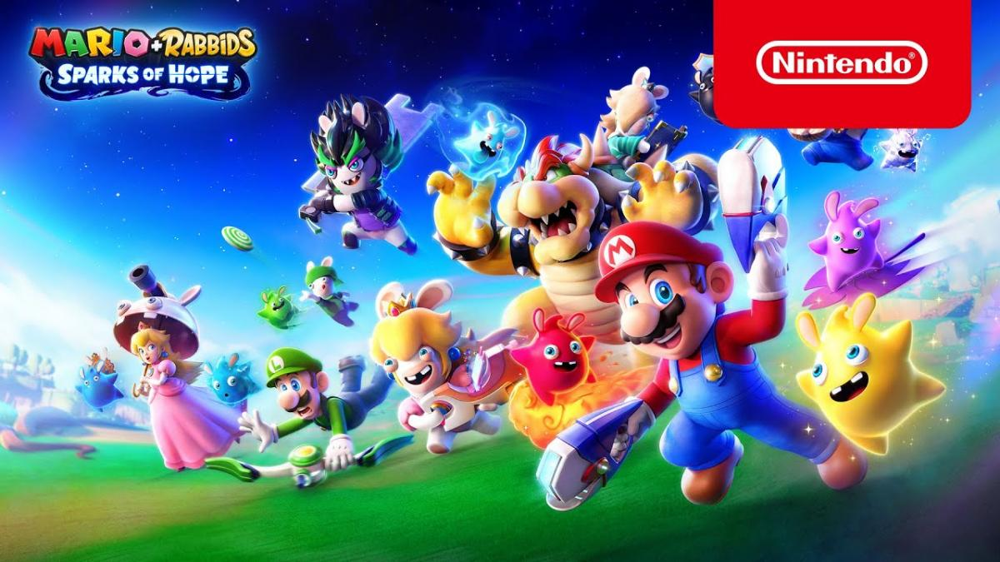

Mario Bros
Mario Bros es un videojuego de arcade desarrollado por Nintendo en el año 1983. Fue creado por Shigeru Miyamoto. Ha sido presentado como un minijuego en la serie de Super Mario Advance y otros juegos Mario Bros ha sido relanzado para Wii, Nintendo 3DS y Wii U en los servicios de Consola Virtual en Japón, Norteamérica, Europa y Australia. Fue la tercera aparición de Mario, y la primera que aparece con su nombre definitivo, ya que en Donkey Kong (1981) aparecía bajo el seudónimo de Jumpman (‘saltador’). En el juego, Mario es retratado como un fontanero ítalo-estadounidense que, junto con su hermano menor Luigi, tiene que derrotar a las criaturas que han venido de las alcantarillas de Nueva York. El juego se centra en la exterminación de estas, volteándolas sobre sus espaldas y pateándolas. Las versiones originales de Mario Bros. —la versión de arcade y la versión de Family Computer/Nintendo Entertainment System (FC/NES)— fueron recibidas positivamente por los críticos.
Personajes más conoidos de Super Mario Bros
Mario:
Es el personaje, protagonista y la mascota principal de Nintendo. Su nombre anterior era "Jumpman". Apareció por primera vez en el juego Donkey Kong (1981). Viste un overol de mezclilla azul, guantes blancos, una camisa roja de manga larga, una gorra roja y una letra "M" roja grabada en el medio en un círculo blanco alrededor. Su anterior amor era una chica llamada Pauline, quien era secuestrada por Donkey Kong. Ahora su amor es la Princesa Peach, quien es la actual damisela en apuros (porque es capturada por Bowser), pero Mario siempre logra derrotarlo y rescata a la princesa. Su última aparición hasta el momento es en Mario Strickers: Battle League como personaje jugable.
Luigi:
Luigi es el hermano menor de Mario; su primera aparición fue en el juego Mario Bros. (1983). Su vestimenta es similar a la de su hermano, con la diferencia de que su camisa y gorra son verdes, su gorra tiene una letra "L" de color verde. Se dice que es tímido y cobarde, pero en algunos juegos demuestra que tiene valentía suficiente. En Luigi's Mansion para la GameCube tiene que rescatar a su hermano mayor Mario de una mansión embrujada plagada de fantasmas, Luigi tuvo que enfrentarse a sus temores para rescatar a su hermano, y desde entonces siempre se le ha identificado a Luigi con "su" mansión. Su última aparición hasta el momento es en Mario Strickers: Battle League como personaje jugable.

Peach:
La Princesa Peach (conocida anteriormente como Princesa Toadstool) es la princesa del Reino Champiñón. Apareció por primera vez en el juego Super Mario Bros. (1985) como la damisela en apuros. Tiene el cabello rubio y usa un vestido color rosa. Se dice que ella y Mario son pareja. Ha sido secuestrada por Bowser en numerosas ocasiones, siendo siempre rescatada por Mario. En el año 2005 se cambiaron roles para ser ella quién rescate a Mario en Super Princess Peach para la Nintendo DS, juego donde ella es la protagonista. Otra aparición en los videojuegos ha sido en New Super Mario Bros. U siendo en este juego secuestrada en su propio castillo por Bowser. En Super Mario Bros. 2 y Super Mario 3D World, no es secuestrada por Bowser y por lo tanto aparece como personaje jugable. Su última aparición en los videojuegos hasta el momento es en Mario Strickers: Battle League como personaje jugable.

Toad:
Toad es un pequeño humanoide con la cabeza en forma de champiñón. Su primera aparición fue en Super Mario Bros (1985), en dicho juego, cuando Mario lo rescataba, Toad decía: Thank you Mario! But our princess is in another castle —en español: «Gracias Mario, pero nuestra princesa está en otro castillo».— En Super Mario Bros. 2 apareció como personaje jugable, junto con Mario, Luigi y Peach, en este juego Toad destacaba por su buena velocidad, aunque su salto dejaba mucho que desear. Desde entonces, Toad ha aparecido en varios juegos, como Super Mario Bros. 3, Super Mario 64, Super Mario Sunshine, Super Mario 3D World, etcétera.
Yoshi:
El mejor amigo de Mario es un dinosaurio pequeño llamado Yoshi. Su primera aparición fue en el juego Super Mario World (1990), aunque en la línea del tiempo ficticia de la serie, sería en Super Mario World 2: Yoshi's Island (1995) la primera vez cuando el Bebé Mario y Yoshi se conocen, ayudando tanto a él como a su hermano Luigi a llegar junto a sus padres. Por lo general Yoshi es de color verde como la mayoría de personajes que son reptiles de Nintendo, pero también han aparecido Yoshis de su misma especie, pero de otros colores, personalidades y habilidades.
Bowser:
El archienemigo de Mario es Bowser, también conocido como el rey de los Koopas, el antagonista principal de la gran mayoría de los juegos de Mario. Apareció por primera vez en Super Mario Bros. (1985). Bowser es un ser maligno, brutal y despiadado que ha secuestrado a la princesa Peach y tratado de conquistar el Reino Champiñón varias veces, pero Mario siempre lo ha derrotado. A pesar de esto, algunas veces Mario y Bowser han unido fuerzas para combatir a una amenaza mayor, un ejemplo de esto último es en Super Paper Mario, Super Mario RPG: Legend of the Seven Stars, Mario & Luigi: Superstar Saga, Mario & Luigi: Bowser's Inside Story y Paper Mario: The Origami King.

Donkey Kong:
El primer enemigo de Mario fue Donkey Kong, un gorila que secuestra a su novia Pauline. Donkey Kong apareció por primera vez en el juego del mismo nombre. En dicho juego, Mario tenía que saltar los barriles que el gorila lanzaba y subir escaleras para llegar a la parte superior de la pantalla donde se encontraban ambos. Todos pensaban que Donkey Kong era quien secuestraba a Pauline en este juego, pero posteriormente Rare aclaró que en realidad este era Cranky Kong y Donkey Kong su hijo, quien lo salvaba en el juego Donkey Kong Jr.. Desde entonces, él aparece en muchos juegos spin-off de Mario, como la serie Mario Kart, la serie Mario Party, etcétera. Es el protagonista en juegos como Donkey Kong Country y Donkey Kong 64. También aparece en Mario vs. Donkey Kong, Mario vs. Donkey Kong 2: March of the Minis y Mario vs. Donkey Kong 3: Minis March Again como el antagonista principal. A pesar de que Donkey Kong fue el primer enemigo de Mario, actualmente a Bowser se le considera más como su peor enemigo.